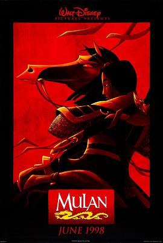

花木兰 / Mulan
又名：木兰 / China Doll / The Legend of Mulan
小学的时候我爸搞来了这个电影的VCD, 真的是做的太好了, 有同期(?)的宝莲灯做对比, 实在是太爱这个动画了, 在那个互联网不发达的年代这个vcd看了无数遍
作品信息
| 导演 | 巴里·库克 / 托尼·班克罗夫特 |
| 编剧 | 萧丽塔 / 克里斯·桑德斯 |
| 主演 | 温明娜 / 艾迪·墨菲 / 黄荣亮 / 哈维·费斯特恩 / 米盖尔·弗尔 / 吴汉章 |
| 类型 | 剧情 / 动画 / 家庭 / 冒险 |
| 制片国家/地区 | 美国 |
| 语言 | 英语 |
| 上映日期 | 1998-06-19(美国) |
| 片长 | 88分钟 |
| IMDb | tt0120762 |
说过什么
2020-08-08 17:25:34
看过 · 时间来自广播，短评来自标记页
小学的时候我爸搞来了这个电影的VCD, 真的是做的太好了, 有同期(?)的宝莲灯做对比, 实在是太爱这个动画了, 在那个互联网不发达的年代这个vcd看了无数遍
最后一次看到是 2026-08-01T11:05:31+10:00 · 豆瓣原页